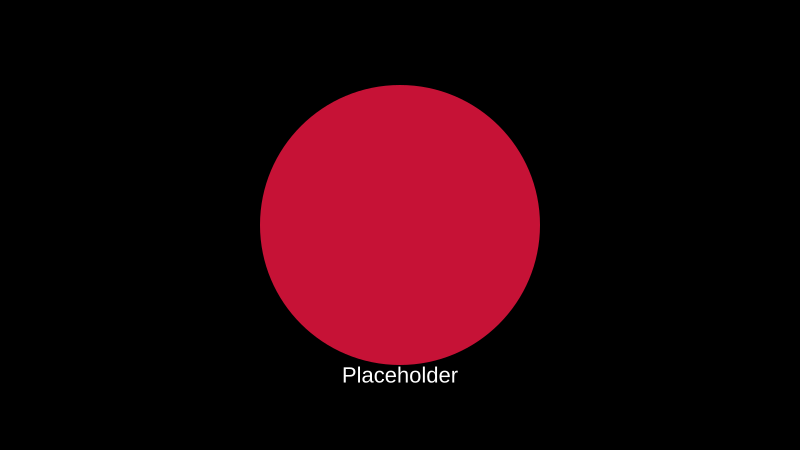

An Autonomy project designed as a direct test of hard-surface modelling proficiency. The subject is a full suit of 15th-century Gothic plate armour based on the collection at the Royal Armouries in Leeds.
Chosen for the complexity of its compound curves, articulation points, and surface detail. The project scope covers the complete armour set: sallet, bevor, pauldrons, cuirass, plackart, rerebrace, couter, vambrace, faulds, gauntlets, cuisses, greaves, poleyn, sabatons, and a longsword. Each component is being modelled individually in Blender from photographic reference and historical documentation, with the intention of texturing in Substance Painter to develop material authoring skills alongside the modelling work.
This is an ongoing project. The sallet and bevor are complete; remaining components are in progress.
YEAR
2025–2026 (ongoing)
TOOLS
Blender, Substance Painter (planned)
ROLE
Sole artist
CONTEXT
University — Autonomy Project
STATUS
Work in Progress
PROCESS

01
RESEARCH
Primary reference gathered from the Royal Armouries collection in Leeds, supplemented by historical documentation of 15th-century Gothic plate armour construction. Each component was studied for its functional articulation, material thickness, and surface finishing before modelling began. The Gothic style was selected for its compound curves and fluted surfaces — the most technically demanding variant of medieval plate armour.

02
MODELLING
Hard-surface modelling in Blender, working component by component. The sallet and bevor were completed first as they represent the most complex compound curves in the set. Topology is being managed for subdivision surface compatibility, with edge flow following the structural logic of the real metalwork — rivet lines, articulation edges, and fluting ridges defining the mesh structure.

03
MATERIALS (PLANNED)
Substance Painter texturing planned for completed components. The material pipeline will cover forged steel with wear patterns, leather strapping, brass fittings, and padded lining. The goal is to develop material authoring skills that complement the modelling work — understanding how surface detail reads at render time, not just in the viewport.
04
PRESENTATION
Final presentation will include turntable renders of the complete armour set, detail close-ups of key components, and comparison shots against the Royal Armouries reference. The project documentation will cover the full pipeline from reference to final render, demonstrating research methodology alongside technical execution.
OUTCOME


This project exists to prove that modelling skill is earned through patient study of real objects, not approximated through procedural shortcuts. The Gothic plate armour was chosen because it cannot be faked — every curve, every rivet, every articulation point has a functional reason that the model must respect. Work in progress — the full set will be completed as part of the Autonomy module.